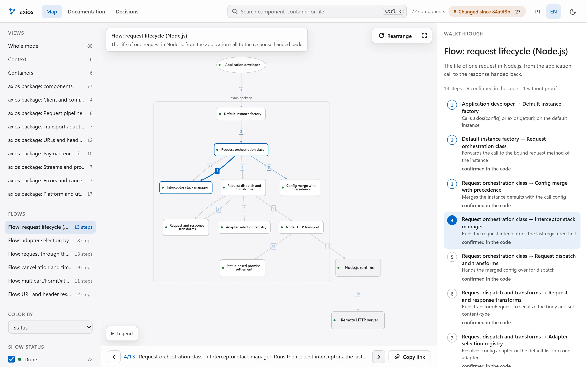
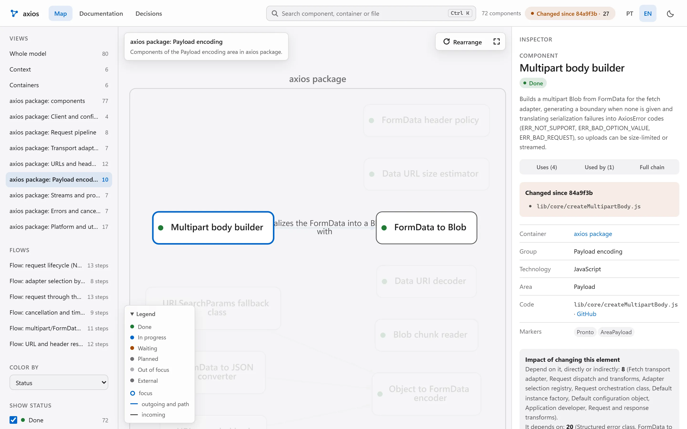
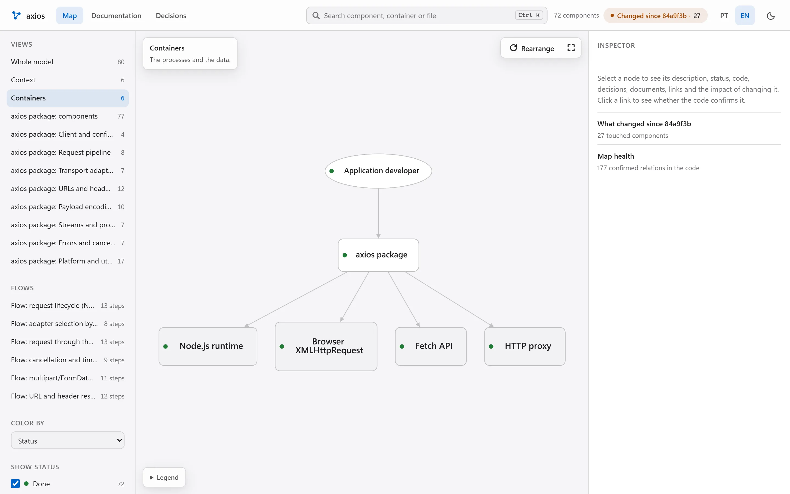
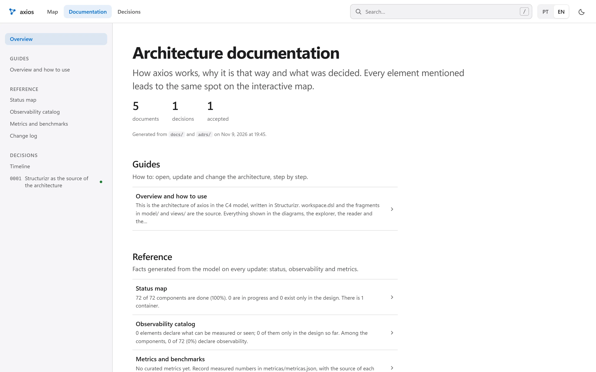

Lodemap
Esta páginaO mapa e a documentação do projeto. Funciona sozinho, sem servidor. O CodeGraph (relações com 0 tokens) é uma integração opcional.
Agentes leem o repositório e montam um mapa C4 com fluxos animados, um leitor de documentação e um teste que falha quando um módulo fica de fora. Depois disso, um commit que não muda a estrutura atualiza tudo só com scripts, e o modelo só volta para o que mudou.

01O problema
Times herdam sistemas que ninguém consegue explicar inteiro. Reescrever a documentação custa semanas, e ela envelhece logo depois. Pedir a um modelo para "documentar tudo" sai caro e não garante que o texto bate com o código.
Desenhados à mão uma vez, nunca mais conferidos.
Quem chega precisa descobrir sozinho por onde o pedido passa.
Métricas e benchmarks citados sem arquivo nem commit.
O porquê de cada escolha fica em conversas que ninguém acha depois.
02O que ele gera
O modelo de arquitetura mora no seu repositório, em Structurizr DSL (padrão C4), e é revisado em pull request como qualquer código. Todo o resto é gerado a partir dele e roda local, sem servidor.
Sistema, containers, componentes por área, relações nomeadas, visões e fluxos dinâmicos. Cada componente tem status: pronto, em andamento, aguardando, planejado ou fora do foco.
# model/componentes-api.dsl (exemplo) group "Roteamento" { roteador = component "Roteador" "Escolhe o agente" { properties { "status" "Em andamento" "codigo" "app/roteador.py" } } } roteador -> fila "Publica a tarefa"workspace.dsl · model/ · views/
Navega pelas visões, toca os fluxos passo a passo com link para cada passo, filtra por status e mostra o que mudou desde o último commit. Relação sem prova no código aparece marcada.
explorador/index.htmlDocs e decisões (ADRs) com busca, sumário, linha do tempo das decisões e diagramas Mermaid desenhados offline. Cada elemento citado leva ao mesmo ponto no mapa.
leitor/index.htmlUm pytest que falha quando algum módulo do código fica fora do modelo. O mapa não envelhece em silêncio: o CI avisa.
tests/test_arquitetura_cobertura.pyCada número ligado a um componente aponta o arquivo e o commit de onde saiu. Um teste confere se a fonte ainda existe.
metricas/metricas.jsonDocumentos em Markdown, Structurizr Lite e site estático. Liga só o que quiser.
-ComLite · -ComSite


03Como funciona
Cada degrau só entra quando o anterior não resolve. O custo sobe quando a estrutura muda, não a cada commit.
Lista os módulos, sugere relações pelo grafo de código (CodeGraph ou AST) e regenera mapa, leitor e documentos. Sem mudança estrutural, o trabalho para aqui.
Só para o que os scripts não souberam classificar. Somente leitura.
O único papel que decide: corta componentes, nomeia relações e desenha fluxos. Passa por um gate de qualidade objetivo.
Liga métricas às fontes, roda o pipeline e confere cobertura, links e scripts. Corrige a partir de achados já escritos.
Um script monta o rascunho (um componente por módulo e as relações achadas no código) sem gastar token. O modelador só preenche as decisões num JSON, e outro script escreve o DSL. Cada fase roda com um agente novo, então o contexto não acumula. Ao rodar de novo, só o que mudou no código volta para decisão.
workspace.json e a nota de qualidade.inventáriomodeladorgate de qualidademétricas ∥ geradorverificador
| Agente | Modelo | Esforço | Faz |
|---|---|---|---|
lodemap-inventario | haiku | low | Lista módulos, pontos de entrada e dependências; não edita |
lodemap-modelador | sonnet | high | Containers, componentes, relações, visões, fluxos e status |
lodemap-metricas | sonnet | low | Extrai números de evidências com arquivo e commit conferidos |
lodemap-gerador | sonnet | medium | Templates, lodemap.json e o pipeline de atualização |
lodemap-verificador | haiku | medium | Cobertura, links internos, node --check e navegador headless; não edita |
lodemap-revisor-visual | sonnet | high | Só quando você pede mudança visual; compara capturas antes e depois |
Nenhum agente da skill usa Opus. Para atualizar, um script decide antes, sem token: só scripts, adiar com prazo, ou uma sessão de modelo para tudo o que estiver pendente.
04Provas
Todo número vem de repositório público: axios (JavaScript), rich (Python) e chi (Go). A atualização do axios foi repetida três vezes. Abra o mapa na demo e confira.
O axios publicou a v1.21.1: 99 commits, 27 arquivos alterados em lib/, 3 deles novos. O que aconteceu depois do merge:
lib/ ficar fora do modelo. O mapa foi feito na v1.20.0 (69 módulos) e atualizado para a v1.21.1Limites: a referência é uma rodada de Sonnet, não gabarito humano; scripts, testes e gancho rodaram no Windows e no Linux, mas as fases com modelo só no Windows, e o macOS não foi rodado; se o mapa barateia um agente de código foi medido em dois repositórios só, com um modelo; a atualização do axios foi repetida três vezes e a conferência das frases duas por repositório, os outros números são de uma rodada; a nota de qualidade mede forma, e a verdade é medida à parte por um juiz que é um modelo.
05Wikis geradas × Lodemap
Ferramentas como a DeepWiki e a Google Code Wiki geram e hospedam a documentação por você, com chat sobre o código. É um bom produto. O Lodemap aposta em outra coisa: um modelo de arquitetura versionado, conferido por teste e barato de manter.
| Wikis geradas e hospedadas | Lodemap | |
|---|---|---|
| Onde fica | Na plataforma do fornecedor | No seu git, em Structurizr DSL (padrão C4), revisável em pull request |
| Atualização | A Code Wiki regenera a documentação depois de cada mudança [1] | Um script decide sem tokens: regenerar por scripts, adiar com prazo, ou chamar o modelo uma vez para tudo o que mudou na estrutura |
| Cobertura | Em repositórios grandes a DeepWiki pode deixar pastas de fora; dá para listar até 30 páginas (80 no Enterprise) no .devin/wiki.json [2] | Um teste falha se algum módulo ficar fora do mapa (72 de 72 no mapa do axios) |
| Custo | DeepWiki: nível baixo gratuito; médio de 5 a 10 ACUs e alto de 20 a 40 ACUs por wiki [2] | US$ 1,74 por mapa completo do axios e US$ 0,47 para atualizá-lo de uma versão para a outra, em custo equivalente da API (medido uma vez, 09/11/2026); commit sem mudança de estrutura não chama modelo |
| Repositório privado | A Code Wiki anunciou uma extensão do Gemini CLI, com lista de espera em 13/11/2025 [1] | Os scripts rodam na sua máquina; os passos com modelo enviam à Anthropic o código que leem, pelo Claude Code que você já usa |
| O que eles fazem e nós não | Chat sobre o código e zero instalação | Sem chat próprio: quem pergunta é o seu agente, usando o mapa |
Fontes consultadas em 05/11/2026; o que se diz de outros produtos vale até onde deu para conferir naquele dia. [1] Google Developers Blog, "Introducing Code Wiki". [2] Documentação da Devin, "DeepWiki repository wikis".
06Custo
Documentação só continua viva se atualizar for barato, e de graça quando a estrutura não muda. O trabalho repetitivo fica com scripts, e o modelo entra só quando a estrutura muda.
Os scripts regeneram mapa, leitor e documentos: 17 s no axios.
50 chamadas, 8,9 min de modelo. Mais uma chamada de Haiku 5.5 nomeou e descreveu os 69 módulos (54.116 tokens, 66 s) e custa menos de US$ 0,03, mesmo cobrando todos os tokens como saída. Nenhuma chamada passou de 100 mil tokens de contexto (pico 97 mil).
19 chamadas em Sonnet, 129 s: decidiu container, status e as 12 relações. Uma chamada de Haiku (26.029 tokens, 34 s) descreveu os 3 módulos novos e revisou 16.
Palavra por palavra; 1 mudou (o módulo de cookies, que ganhou suporte à Cookie Store API naquela versão). Nenhum nome e nenhuma área mudou.
Em 5 pares de versões, 78 arquivos alterados pediram 32 revisões, porque só reabre o módulo cuja superfície pública mudou. Lendo os diffs que ficaram de fora no rich e no axios, 3 de 178 arquivos ainda escondiam mudança.
Atualizar a cada commit gasta à toa: cada sessão de modelo paga o contexto de novo. O lodemap_decidir.py
mede o que mudou e responde uma de cinco ações. O teste continua estrito por padrão; você escolhe quantos módulos
podem esperar e por quantos dias, e a lista fica versionada, com data.
pendentes.json, com data, no seu commit.Os tokens vêm do registro dos agentes, deduplicado por mensagem, multiplicados pelo preço oficial da API (platform.claude.com/docs/en/about-claude/pricing, conferido em 08/11/2026). Sonnet 5.5: US$ 2 por milhão de entrada, US$ 10 de saída, US$ 0,10 de leitura de cache e US$ 4 de escrita de cache de 1 hora. Haiku 5.5 até 100 mil tokens de prompt: US$ 0,10 de entrada e US$ 0,50 de saída.
As rodadas usaram a assinatura do Claude Code, então o valor é o custo equivalente pela API, não uma fatura. Fica de fora a sessão que orquestrou os agentes. Cada número é de uma rodada só (medido em 09/11/2026).
07Instalar
Requer Python 3.11+ e git. O instalador mostra cada mudança, guarda cópia de tudo que toca e desfaz byte a byte.
# o repositório público abre no lançamento $ git clone https://github.com/skarL007/lodemap && cd lodemap $ python -m lodemap instalar --perfil padrao # simulação: só mostra $ python -m lodemap instalar --perfil padrao --aplicar # aplica, com backup e manifesto
$ python -m lodemap plano --repo . # 0 tokens: módulos, custo, tempo, arquivos $ python -m lodemap consentir --repo . --escopos gerar,modelo --orcamento-mensal 5 $ python -m lodemap reverter # desfaz a última instalação
08Limites conhecidos
ver-arquitetura.ps1 pede PowerShell.mindmap, architecture e fórmulas usam a versão completa do Mermaid, carregada só na página que tem um desses. Apague o arquivo para economizar espaço; o bloco mostra um aviso e mantém o texto.09Estado do projeto
Itens do lançamento concluídos
--help em inglês ou português, por variável de ambiente, idioma do mapa ou locale do sistema.O mapa e a documentação do projeto. Funciona sozinho, sem servidor. O CodeGraph (relações com 0 tokens) é uma integração opcional.
Memória de projeto para agentes, em Rust, com firewall antes da execução, agentes padrão e telemetria honesta. Ver no portfólio.
O repositório abre em breve. Até lá, abra a demo ao vivo ou fale comigo para testar no seu código.